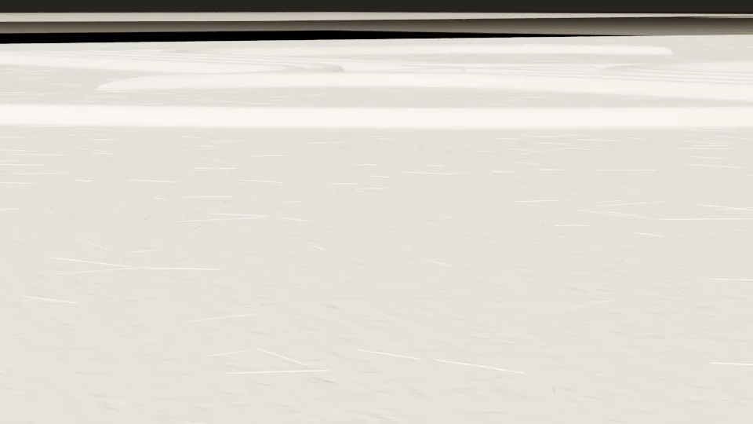
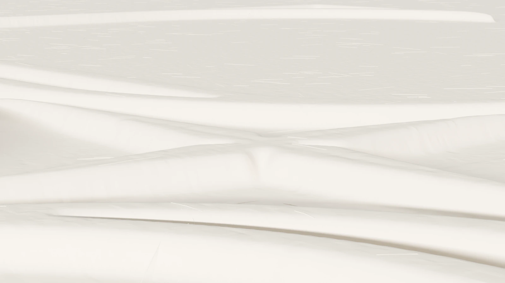
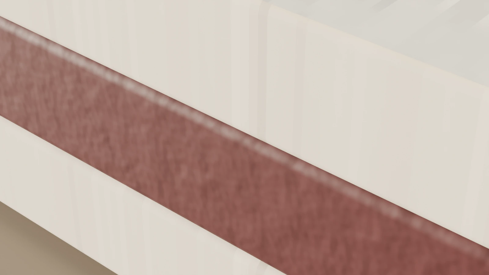
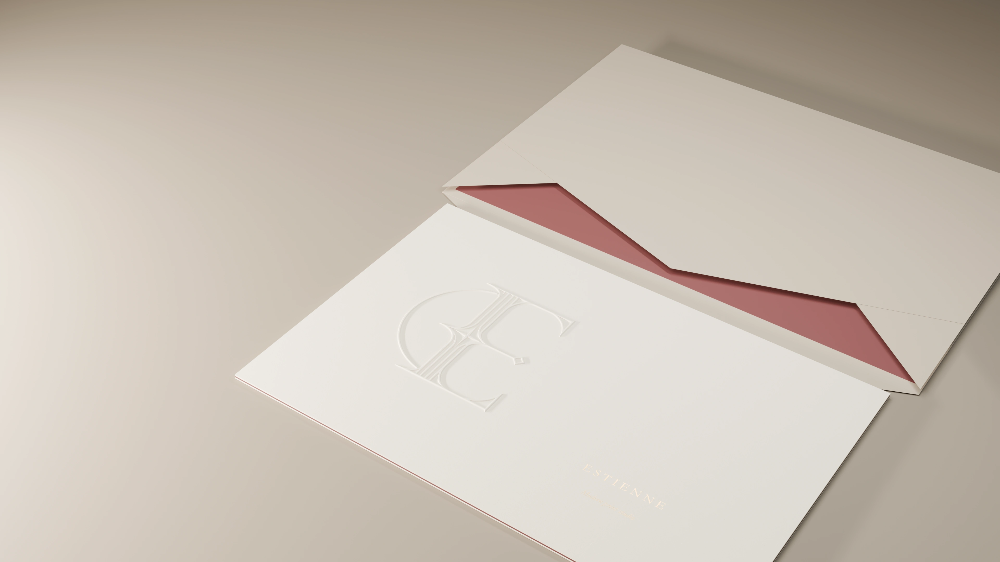

A world
in the making.
Scroll to look a little closer.

Scroll to look a little closer.
A world of detail. One card.
Preparing a closer look…



Soft cotton. A mark made by pressure.
A fine line at the edge.